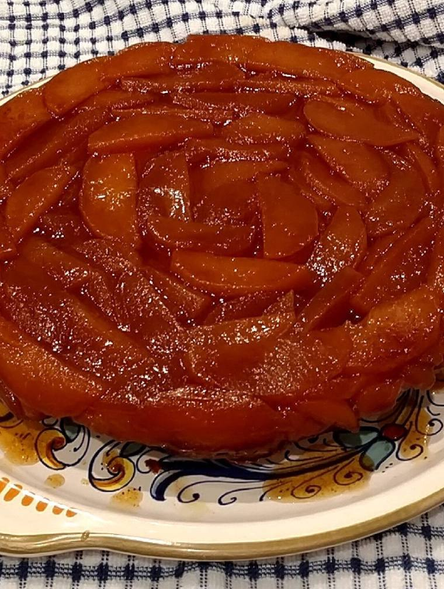

Desserts

Desserts
Tarte Tatin
Préparation : 30 min
Repos : 1 h
Cuisson : 1 h 20
Ingrédients (pour 6 personnes)
- 800 g de pommes fermes
- 100 g de sucre
- 85 g de beurre
- 230 g de pâte feuilletée au beurre
Quantités adaptées. Les temps de cuisson ne sont pas recalculés.
- Découper la pâte en disque de 24 cm, piquer, mettre au congélateur.
- Dans un moule de 20 cm allant au feu, faire un caramel ambré, ajouter hors du feu 60 g de beurre froid.
- Serrer les pommes en quartiers dans le caramel, badigeonner de 25 g de beurre fondu.
- Cuire 30 minutes à 180 °C. Poser la pâte, rentrer les bords, piquer, cuire encore 40 à 45 minutes.
- Laisser reposer 1 heure, puis retourner sur un plat creux.
D’après France.fr, agence nationale du tourisme. Texte reformulé. Poids de pâte corrigé : la source imprime 30 g.